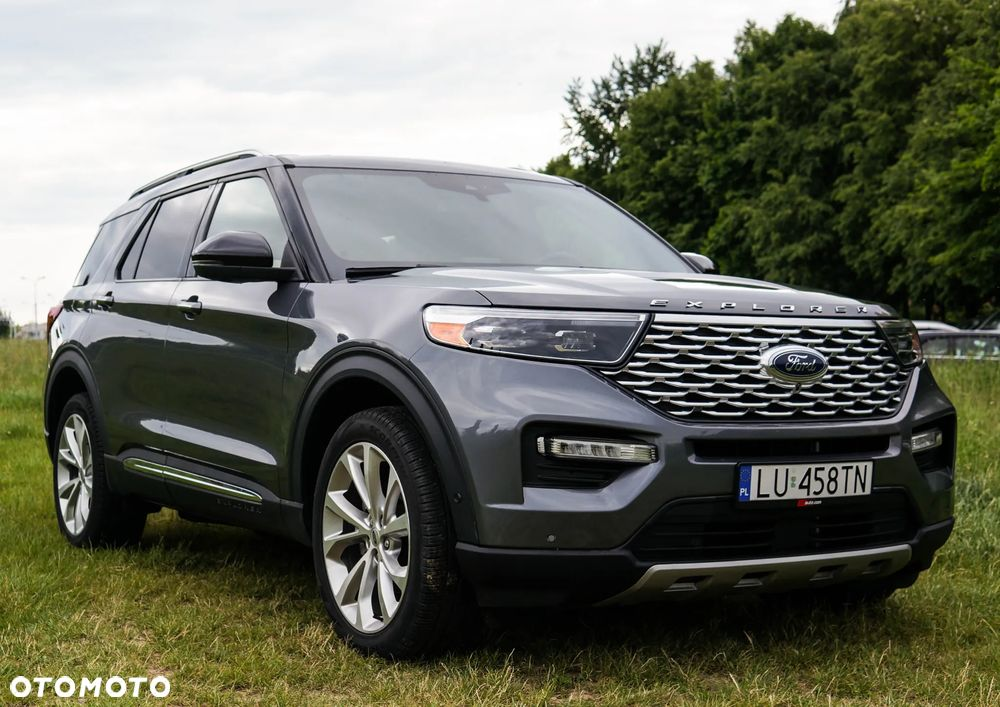
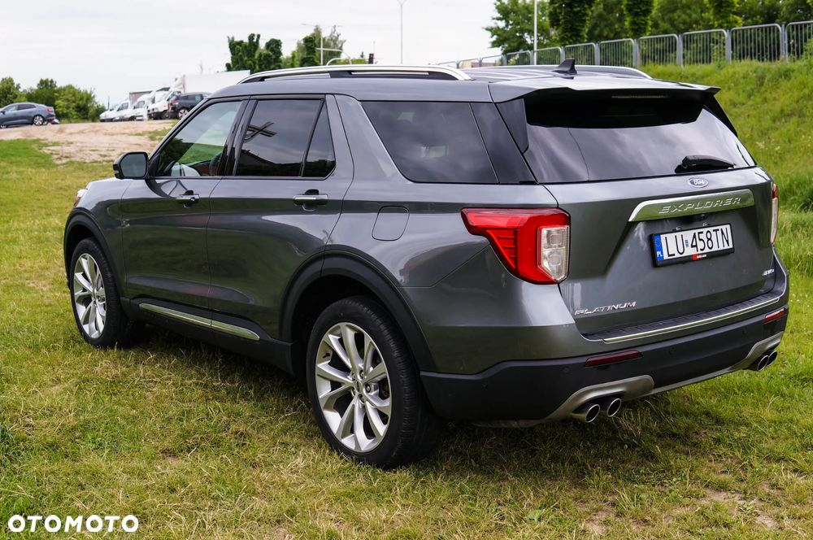
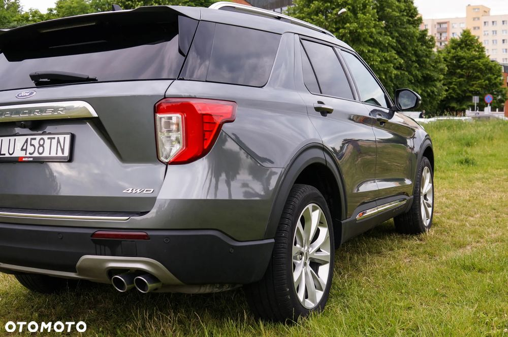
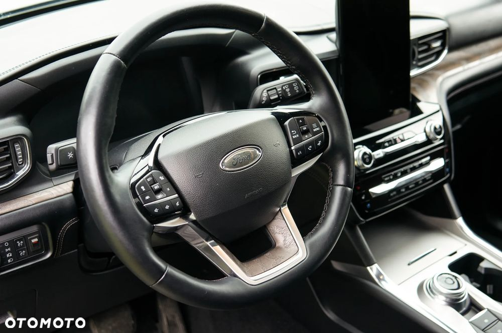
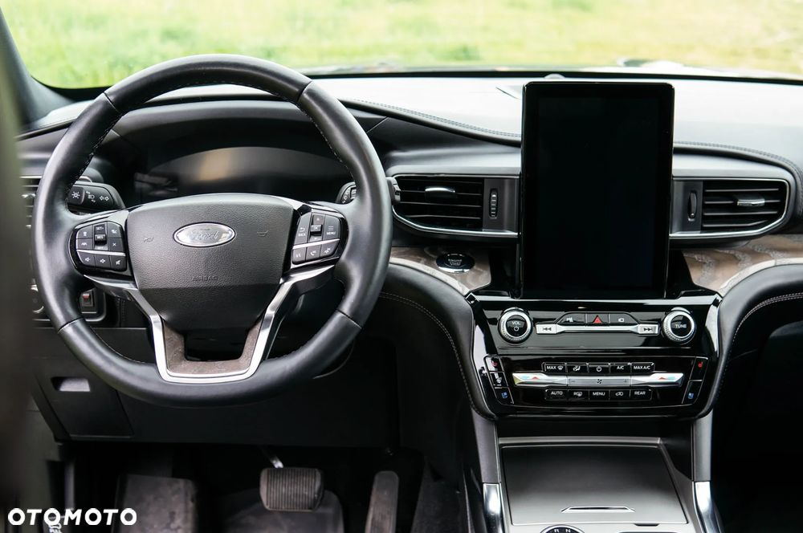
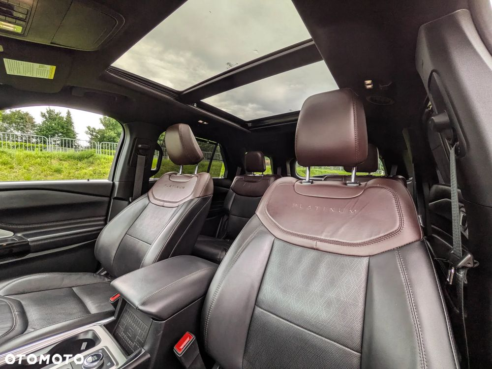
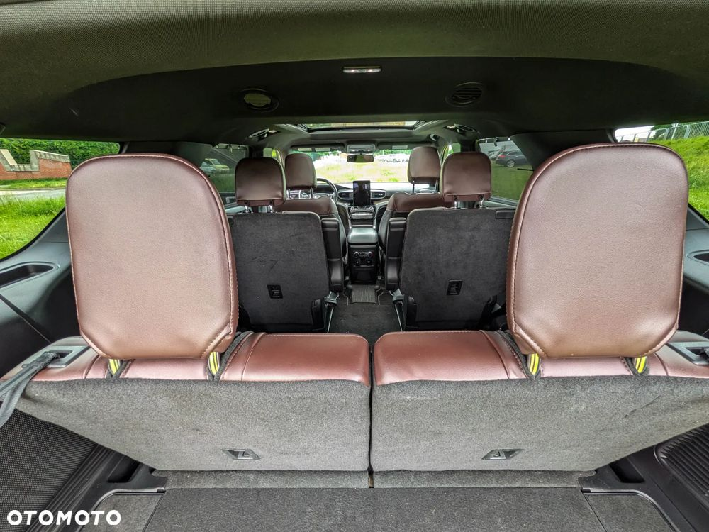
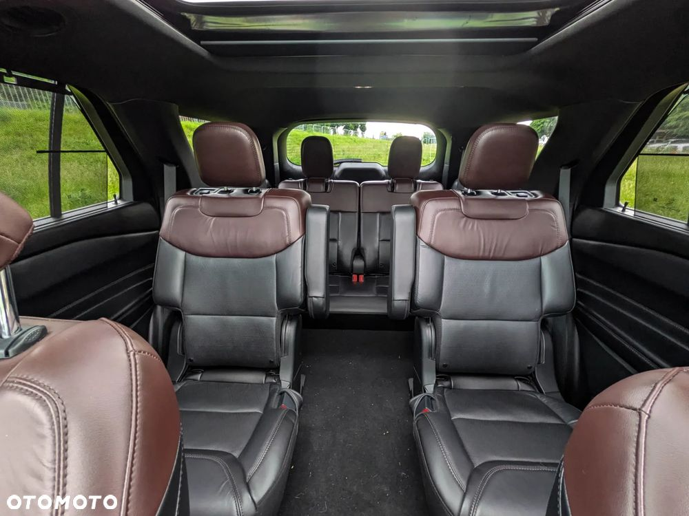
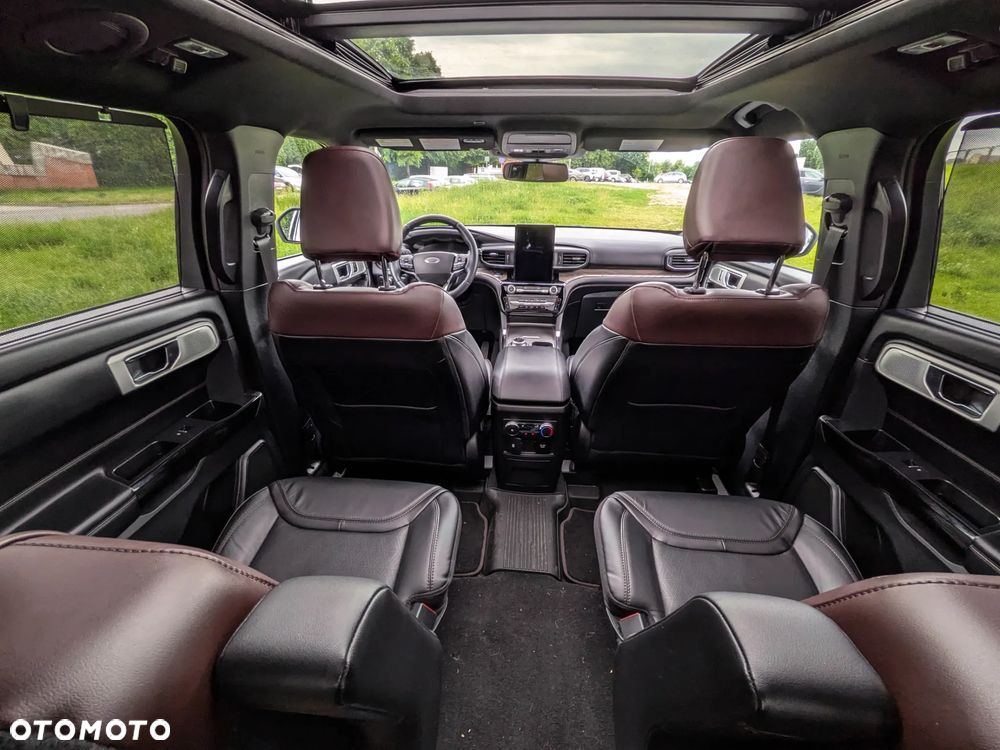

Ford Explorer Platinum 3.0 400KM 4WD- najmocniejsza wersja, czysta benzyna, wersja 6-osobowa.
Wersja Platinum to absolutny szczyt możliwości Forda, który oferuje standard wykończenia i wyposażenie niedostępne w popularnych wersjach XLT czy Limited. Wybierając ten egzemplarz, zyskujesz luksusowe udogodnienia, takie jak: fotele z wielopunktowym masażem Active Motion, perforowaną skórę Tri-Diamond z przeszyciami na desce rozdzielczej oraz w pełni cyfrowy kokpit 12,3" zamiast klasycznych zegarów. Komfort dopełnia najwyższy model nagłośnienia Bang & Olufsen, inteligentne reflektory adaptacyjne LED oraz pełna automatyka: od pamięci ustawień fotela i kierownicy dla kilku kierowców, po elektrycznie składany trzeci rząd siedzeń i system kamer 360°. Egzemplarz w topowej specyfikacji Platinum zapewnia bezkompromisowy komfort termiczny o każdej porze roku: wentylowane fotele przednie idealnie sprawdzają się w upalne dni, a podgrzewana kierownica oraz podgrzewane oba rzędy siedzeń (zarówno przednie fotele, jak i kapitańskie fotele w drugim rzędzie) gwarantują luksusowe warunki podróży dla wszystkich pasażerów.
Auto zostało zaimportowane z USA, kupione od ubezpieczyciela- VIN w załączeniu - można zobaczyć szkodę.
Zostały wykonane niezbędne naprawy oraz serwis.
Wgrane polskie menu, mapy do nawigacji, obsługa głosowa również po polsku.
Bogate wyposażenie - najwyższa wersja dostępna w tym modelu i świetne osiągi - od tego rocznika moc silnika jest taka jak w wersji ST.
Opony całoroczne Pirelli Scorpion Zero na felgach 21".
Auto użytkuje od roku, przyjemne auto w trasy.
Możliwość sprawdzenia samochodu w dowolnej stacji diagnostycznej bądź serwisie.
Sprzedaż prywatna na podstawie umowy kupna-sprzedaży.
OC ważne do 10/02/2027.
Następny przegląd 01/01/2027.
Od sprowadzenia dwukrotnie wymieniony olej silnikowy i filtr oleju.
Niniejsze ogłoszenie nie stanowi oferty w rozumieniu art. 66 Kodeksu Cywilnego.








